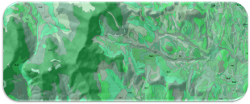
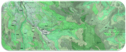
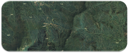

Soil Query
Soil Biophysical Data at Your Fingertips
Soil Data Collection
Case Study Location
Soil Properties
Instructions
Digitize a desired management boundary on the background map. Double-click on your final corner to finish a polygon. Edit the corners as needed. Results will show selected underlying soil properties.
Credits
This chemical and biophysical soil data was collected from stratified field sampling by STI Inc., using both surface and subsurface instrumentation
Map Controls
-
- ( )
Output Results
Create a Polygon First
Blah
Plan for Soil Sustainability!